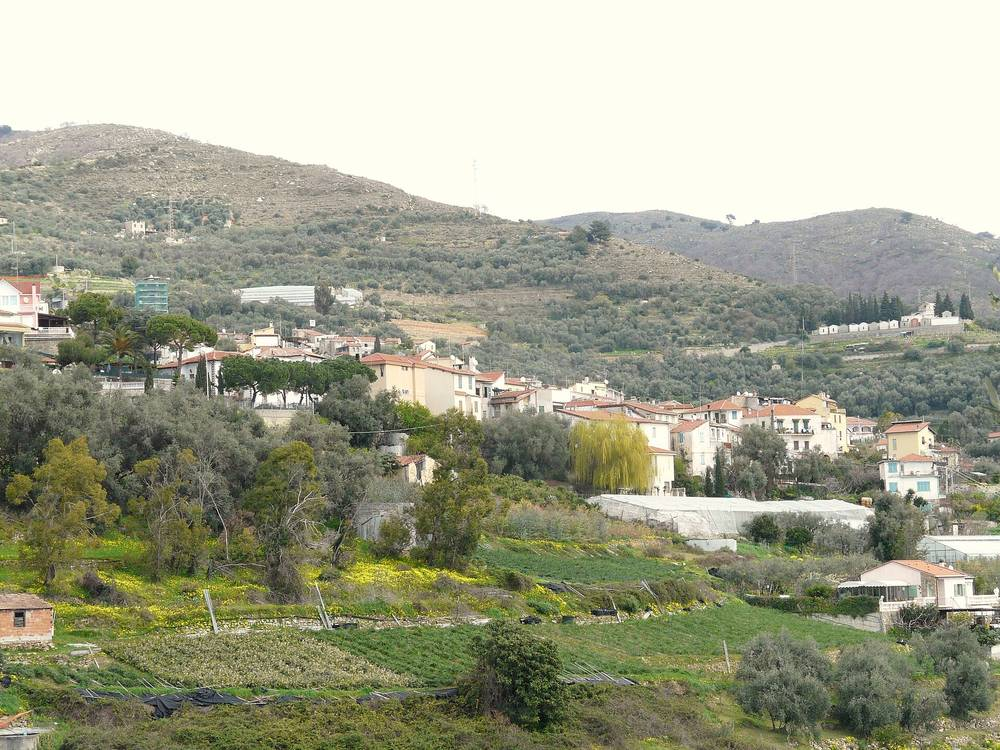

이탈리아 폼페이아나 시, 학교·시청·공영주차장 태양광과 재생에너지공동체(CER)를 한 묶음 민간투자 입찰…공사비 65만7,099유로, 21년 계약

양허 전체 추정가치 141만1,638유로, 시가 운영사에 해마다 2만9,585유로 내는 구조…응찰 11월 27일 마감·30일 개찰, 제안사 우선권은 EU 판결 따라 없애
이탈리아 리구리아 임페리아주의 폼페이아나(Pompeiana) 시가 공공건물 에너지효율화와 재생에너지 발전 설비, 재생에너지공동체(CER) 조성을 한 계약으로 묶어 민간투자사업(project financing) 방식의 양허 공개 국제 입찰을 시작했다. 입찰 절차는 임페리아주가 통합 조달기관으로 대신 맡고, 계약은 시가 맺는다. 태양광은 초등학교와 시청 지붕, 비아 라고스쿠로의 바·식당 건물 지붕, 산타마리아 광장 주차장과 학교 앞 주차장에 들어설 계획이며, 입찰 서류에는 공동체를 꾸릴 참여형 재단 'CER EPEO ETS'의 정관과 내부 규정도 담겼다. 양허 전체 추정가치는 141만1,638유로(부가세 별도)이고 공사 투자는 65만7,099유로로 그중 공사비가 51만6,087.25유로, 설계비가 8만7,734.83유로이며, 국가회복계획(PNRR) 9만4,694유로와 콘토테르미코 24만3,244유로 보조금은 신청해 승인을 받아야 쓸 수 있는 돈이다. 계약 기간은 실시설계 3개월·공사 9개월·운영 20년을 합친 21년으로, 낙찰 사업자는 설비 운영과 유지보수, 난방 설비 관리까지 맡고 시는 해마다 2만9,585유로(부가세 별도)를 사업자에게 내는데, 응찰자는 이 금액을 깎아 제시하고 기준 사용량을 넘는 전기에는 kWh당 0.25유로 미만의 단가를 내야 하며 에너지서비스회사(ESCO) 자격이 있어야 한다. 사업은 토리노의 아우라 에너지(Aura Energy)가 제안해 2025년 시의회가 공익성을 인정한 것이지만 2025년 2월 EU 사법재판소 판결에 따라 제안사 우선권은 없앴고, 응찰은 11월 27일 낮 12시에 마감해 11월 30일 개찰하며, 설비 용량과 공동체 참여 주민 수는 공개되지 않았다.
시민에너지 관점
리구리아의 한 시가 학교 지붕과 공영주차장 두 곳을 한 계약으로 묶고 에너지공동체까지 넣은 것은, 공공 부지를 재생에너지와 지역 나눔의 터로 쓰겠다는 분명한 신호다. 다만 설계·시공·20년 운영을 민간 에너지서비스회사 한 곳에 맡기고 시가 해마다 사용료를 내는 구조라면, 공동체는 이름만 남고 이익은 사업자에게 쏠린다는 우려가 나올 수 있다. 캐나다 온타리오주 토론토에서 시작한 태양광 협동조합 솔라셰어(SolarShare)는 시민에게 채권을 팔아 모은 돈으로 지붕과 부지에 태양광을 지어 왔는데, 이처럼 주민 출자로 자금을 대면 공공 부지에서 나온 이익이 다시 주민에게 돌아간다. 국내 지자체도 공영주차장·학교 태양광을 민간 위탁으로만 풀지 말고, 주민이 출자해 주인이 되는 공동체 몫을 계약 조건에 처음부터 넣어야 한다.
출처: Sanremonews 2026-11-03 Andrea Musacchio 원문 보기
イタリア・ポンペイアーナ市、学校・市役所・公営駐車場の太陽光と再生可能エネルギー共同体（CER）を一括した民間投資入札…工事費65万7,099ユーロ、21年契約
コンセッション全体の推定価値141万1,638ユーロ、市が事業者に毎年2万9,585ユーロを支払う仕組み…応札は11月27日締め切り・30日開札、提案者の優先権はEU判決を受けて廃止
イタリア・リグーリア州インペリア県のポンペイアーナ（Pompeiana）市は、公共施設の省エネ改修と再生可能エネルギー発電設備、再生可能エネルギー共同体（CER）の設立を一つの契約にまとめ、民間資金を活用するプロジェクト・ファイナンス方式のコンセッション（事業権付与）の公開国際入札を始めた。入札手続きはインペリア県が統合調達機関として代行し、契約は市が結ぶ。太陽光は小学校と市役所の屋根、ラゴスクーロ通りのバー・レストランの建物の屋根、サンタ・マリア広場の駐車場と学校前の駐車場に設ける計画で、入札書類には共同体を運営する参加型財団「CER EPEO ETS」の定款と内部規程も含まれている。コンセッション全体の推定価値は141万1,638ユーロ（付加価値税別）、工事投資は65万7,099ユーロで、うち工事費が51万6,087.25ユーロ、設計費が8万7,734.83ユーロだ。国家復興計画（PNRR）の9万4,694ユーロとコント・テルミコの24万3,244ユーロの補助金は、申請して認められて初めて使える資金だ。契約期間は実施設計3か月・工事9か月・運営20年を合わせた21年で、落札事業者は設備の運営と保守、暖房設備の管理まで担い、市は毎年2万9,585ユーロ（付加価値税別）を事業者に支払う。応札者はこの額からの値引きを示し、基準使用量を超える電力にはkWh当たり0.25ユーロ未満の単価を提示する必要があり、エネルギーサービス会社（ESCO）の資格が求められる。事業はトリノのアウラ・エナジー（Aura Energy）が提案し、2025年に市議会が公益性を認めたものだが、2025年2月のEU司法裁判所の判決を受けて提案者の優先権はなくした。応札は11月27日正午に締め切り、11月30日に開札する。設備容量と共同体に参加する住民の数は公表されていない。
市民エネルギーの視点
リグーリアの一つの市が学校の屋根と公営駐車場2か所を一つの契約にまとめ、エネルギー共同体まで盛り込んだことは、公共用地を再生可能エネルギーと地域での分かち合いの場にするという明確なシグナルだ。ただ、設計・施工・20年の運営を民間のエネルギーサービス会社1社に任せ、市が毎年使用料を払う仕組みでは、共同体は名ばかりで利益は事業者に偏るという懸念も出かねない。カナダ・オンタリオ州トロントで始まった太陽光協同組合ソーラーシェア（SolarShare）は、市民に債券を売って集めた資金で屋根や用地に太陽光を建ててきた。このように住民の出資で資金をまかなえば、公共用地から生まれた利益が住民に戻ってくる。韓国の自治体も公営駐車場や学校の太陽光を民間委託だけで済ませず、住民が出資して持ち主になる共同体の持ち分を、最初から契約条件に入れるべきだ。
出典: Sanremonews 2026-11-03 アンドレア・ムザッキオ 原文を読む
意大利蓬佩亚纳镇将学校、镇政府和公共停车场光伏与可再生能源社区（CER）打包进行社会资本招标…工程投资65.7099万欧元，合同21年
特许经营总估值141.1638万欧元，镇政府每年向运营商支付2.9585万欧元…11月27日截止投标、30日开标，依欧盟法院判决取消发起人优先权
意大利利古里亚大区因佩里亚省的蓬佩亚纳（Pompeiana）镇，把公共建筑节能改造、可再生能源发电设施和可再生能源社区（CER）建设合并为一个合同，以项目融资方式启动了特许经营公开国际招标。招标程序由因佩里亚省作为统一采购机构代为办理，合同由镇政府签订。光伏设施计划安装在小学和镇政府屋顶、拉戈斯库罗街一处酒吧餐厅建筑的屋顶，以及圣玛利亚广场停车场和学校门前停车场；招标文件中还附有将运营社区的参与式基金会"CER EPEO ETS"的章程和内部规则。特许经营总估值为141.1638万欧元（不含增值税），工程投资为65.7099万欧元，其中工程费51.608725万欧元、设计费8.773483万欧元；国家复苏计划（PNRR）的9.4694万欧元和"热能账户"（Conto Termico）的24.3244万欧元补贴，须申请并获批后才能使用。合同期为21年，包括施工设计3个月、施工9个月和运营20年；中标企业负责设施运营、维护以及供暖设备管理，镇政府每年向企业支付2.9585万欧元（不含增值税），投标人须在此基础上报出降幅，超过基准用量的电力须报出每千瓦时低于0.25欧元的单价，并须具备能源服务公司（ESCO）资质。该项目由都灵的Aura Energy公司提出，镇议会于2025年认定其具有公共利益，但根据欧盟法院2025年2月的判决取消了发起人优先权；投标于11月27日中午截止，11月30日开标，装机容量和参与社区的居民人数尚未公布。
市民能源视角
利古里亚的一个小镇把学校屋顶和两处公共停车场纳入同一个合同，还加上能源社区，这清楚表明要把公共用地变成发展可再生能源、在本地分享收益的场所。不过，如果设计、施工和20年运营全部交给一家民营能源服务公司，再由镇政府每年支付使用费，就难免让人担心社区徒有其名、收益却流向企业。发源于加拿大安大略省多伦多的光伏合作社SolarShare，向市民发行债券筹资，在屋顶和场地上建设光伏；像这样以居民出资提供资金，公共用地产生的收益才会回到居民手中。韩国地方政府也不应只靠委托民营企业来推进公共停车场和学校光伏，而应从一开始就把居民出资、成为主人的社区份额写进合同条件。
来源: Sanremonews 2026-11-03 安德烈亚·穆萨基奥 查看原文
Italy's Pompeiana bundles solar on its school, town hall and public car parks with a renewable energy community in one private-finance tender, with works of €657,099 and a 21-year contract
Concession valued at €1,411,638 overall, with the town paying the operator €29,585 a year; bids close on 27 November and open on the 30th, and the promoter's pre-emption right is dropped after an EU court ruling
The town of Pompeiana in the province of Imperia, Liguria, has launched an open international tender for a project-finance concession that bundles energy upgrades of municipal buildings, renewable power plants and the creation of a renewable energy community (CER) into a single contract. The province of Imperia is running the procedure as the single procurement body, while the town will sign the contract. Solar is planned for the roofs of the primary school and the town hall, the roof of a building housing a bar and restaurant on Via Lagoscuro, and two car parks, in Piazza Santa Maria and in front of the school, and the tender documents include the statute and internal rules of "CER EPEO ETS", the participatory foundation that will run the community. The concession is valued at €1,411,638 overall (excluding VAT) and the investment in works at €657,099, of which €516,087.25 is for construction and €87,734.83 for design, while grants of €94,694 from the national recovery plan (PNRR) and €243,244 from the Conto Termico scheme can only be used if applied for and approved. The contract runs for 21 years, made up of three months of detailed design, nine months of works and 20 years of operation; the winning bidder will operate and maintain the systems and manage the heating, and the town will pay it €29,585 a year (excluding VAT), with bidders offering a discount on that sum, quoting a price below €0.25 per kWh for power above a set threshold, and required to hold energy service company (ESCO) status. The project was proposed by Turin-based Aura Energy and declared in the public interest by the town council in 2025, but the promoter's pre-emption right was removed following a February 2025 ruling of the EU Court of Justice; bids close at noon on 27 November and will be opened on 30 November, and neither the installed capacity nor the number of residents in the community has been disclosed.
Citizen Energy View
A Ligurian town tying its school roof and two public car parks into one contract, and adding an energy community, sends a clear signal that public land can serve both renewable power and local sharing. But if design, construction and 20 years of operation all go to a single private energy service company while the town pays an annual fee, there is a risk that the community exists in name only and the gains flow to the contractor. SolarShare, the solar co-operative that began in Toronto, Ontario, has financed panels on roofs and sites by selling bonds to citizens, showing that when residents put up the money, the returns from public land come back to them. Korean local governments, too, should not hand car-park and school solar only to private contractors, but should write a community share owned by resident investors into the contract terms from the start.
Source: Sanremonews 2026-11-03 Andrea Musacchio Read the original